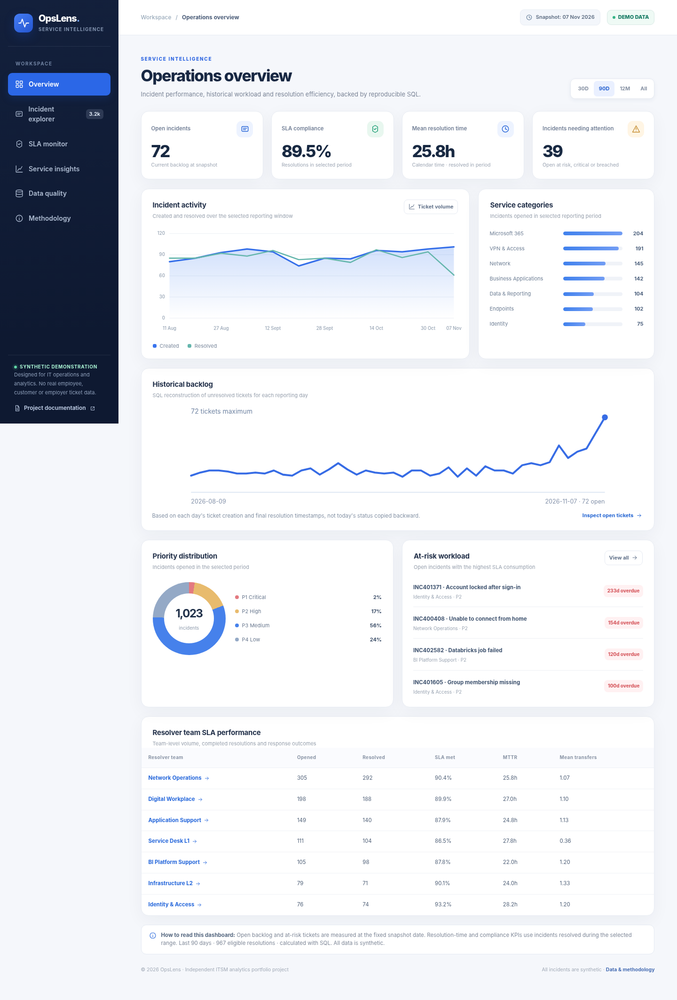

From ticket counts to useful investigation
A service desk dashboard needs to show more than the number of open tickets. An operations analyst should be able to trace SLA results back to completed incidents, distinguish current backlog from historical backlog, and inspect assignment changes when issues take longer than expected.
I created OpsLens as an independent, read-only demonstration covering incident reporting, ticket-level investigation and data validation. The records do not come from an employer or a live ServiceNow or Jira system.

Reproducible data, calculated in SQL
A seeded Python generator creates incident records and timestamped lifecycle events. Validation runs before the reporting stage. A SQL engine then produces period-scoped KPIs, daily backlog and service/team aggregates, exported as compact JSON for the static frontend.
Incidents, lifecycle events, service identifiers, resolver teams and timestamps.
30, 90 and 365-day aggregates, complete history and historical backlog snapshots.
SQLite is the verified default SQL engine. The repository includes an optional DuckDB adapter, which I do not claim as independently tested.
What makes the numbers defensible?
Resolved-ticket SLA compliance counts incidents completed within the selected period. Open incidents are excluded from that denominator. Historical backlog is reconstructed for each date, rather than using today's ticket status.
See a real SQL example: historical backlog
SELECT COUNT(*) AS open_as_of_date
FROM incidents
WHERE opened_epoch <= :day_end_epoch
AND (
resolved_epoch IS NULL
OR resolved_epoch > :day_end_epoch
);This query is drawn from OpsLens's documented SQL definitions ↗. Its date boundary is what makes the backlog historical rather than a current-status count.
Calendar hours are not business hours
The synthetic policies use P1 and P2 calendar-hour targets and P3/P4 business-hour targets. The latter use Monday to Friday, 09:00 to 17:00 in Europe/Berlin, with configured NRW public-holiday exclusions and on-hold intervals.
Four and eight calendar hours respectively.
Sixteen and forty business hours respectively.
A separate policy lab lets visitors explore how a changed target affects an example ticket. It does not rewrite the published incident data.
Bad data should be visible, not hidden
Seven independent validation rules check problems such as duplicated incident identifiers, missing required fields, impossible timestamps and event inconsistencies. Seven deliberately corrupted mock scenarios demonstrate how errors are detected without contaminating reporting totals.
Tests compare SQL aggregates against source record totals and team/service counts.
Tests cover holiday exclusions, date-boundary behavior and sample business-hour calculations.
Scope, tradeoffs and boundaries
- The static frontend loads both published SQL aggregates and compressed synthetic facts for interactive investigation. There is no production database connection.
- The interface uses dependency-free JavaScript rather than React or TypeScript. That keeps the demonstration lightweight and easy to reproduce, but it is not evidence of production React implementation in this project.
- The incident generator does not model full multi-cycle reopening for historical backlog. Team reports use the final or current resolver attribution rather than event-sourced ownership at every moment.
- No real operational tickets, customer data or machine-learning predictions are used.
This is an honest demonstration of analysis and implementation decisions, with the limitations documented alongside the features.